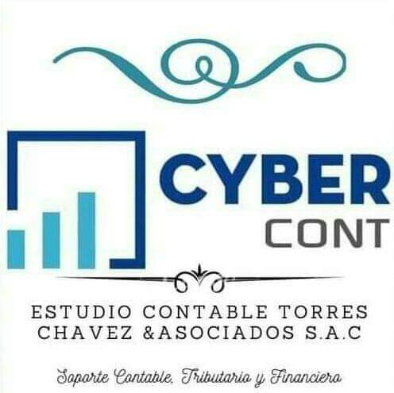
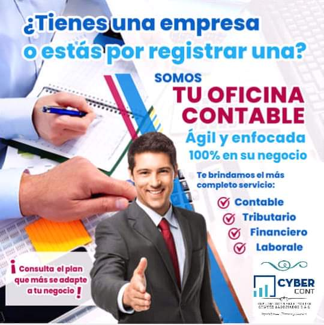

Quienes somos
Somos un equipo de profecionales dedicados en brindar servicios de sesoria y consultoria sobre temas contables,tributarios,laborales y constitucion de empresas.La contabilidad es importante, ya que mantiene un registro sistemático de la información financiera de la organización. Al estar correctamente actualizados, permitirán a los usuarios comparar la información financiera actual con los datos históricos para poder tomar decisiones y controlar la gestión económica. También para planificar de la mejor manera posible los fondos, realizar inversiones y estimar un Balance Futuro.

Nuestra oficina principal se encuentra en Lima, Perú. Tenemos presencia a nivel nacional mediante la contabilidad electrónica y nuestros socios. Con nuestro Estudio Contable puedes asegurar tu patrimonio por que tenemos profesionales con gran experiencia en la prevención y defensa tributaria ante SUNAT. Puedes ahorrar impuestos y recursos con planificación tributaria, esto se logra con nuestra asesoría profesional con resultados inmediatos y confiables todo dentro de los límites legales.
VISIÓN: Ser reconocidos en Lima como un estudio contable y tributario por su excelente servicio y uno de los
más importantes de la capital del Perú.
MISIÓN: Desarrollar, diseñar, innovar y prestar servicios contables y tributarios de alta calidad agregando
valor mas allá de lo esperado por nuestros clientes. Capacitar, dirigir y asesorar a nuestros clientes para
crear una visión de negocio a largo plazo.
Escríbeme al correo:chavezcontable@hotmail.es
WhatsApp:946125150